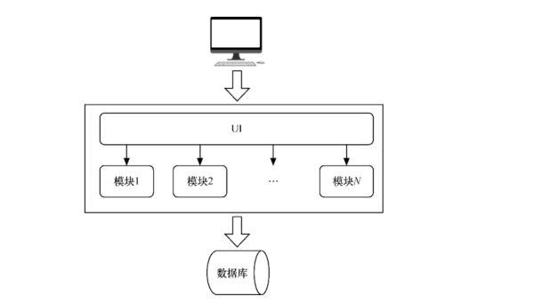
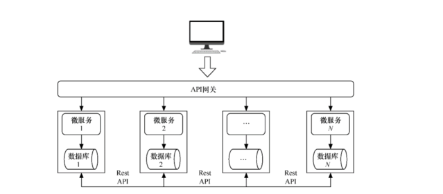

Contents
应用架构的发展¶
1.单体架构与多层架构¶
单体架构是指部署在单台物理机上的应用架构。在软件架构中，还有一些经典的分层架构，如经典的3层架构从上到下依次由用户界面 层、业务逻辑层与数据访问层组成。这类架构之所以能够流行有其历史原因。
在分层架构的时代，多数企业的系统往往较简单，用户量也不大，而这种分层架构在本质上是单体架构的数据库管理系统
单体架构

单体架构的缺点非常明显，包括但不限于以下这些。
开发效率低，所有开发人员都在修改同一个项目的代码，代码冲突概率极大，仅解决冲突都令人应接不暇
代码维护难：代码的功能耦合在一起，稍不注意就有分析遗漏或改到不想改的功能。另外，还有各种历史开关与成堆的遗弃代 码，这导致分析难度极大，无用功较多。
部署不灵活：构建时间长，有任何小修改就必须重新构建整个项目，这个过程往往很长。部署麻烦，部署后的重启耗时太长。
健壮性极低：一个微不足道的小问题就可以造成整个应用程序的瘫痪。
扩展性极差：动态扩容困难，无法满足高并发情况下的业务需求。
总体而言，如果应用规模本身非常小（微服务本身也是微小的单体应用），使用容器技术能带来可观的效益。然而，当这类架构的应用当发展到一定规模时，由于本身太过臃肿且同一时间线并发的冲突项目较多，几乎很难应用容器技术，甚至有时会适得其反。有时这类应用使用非容器技术会更高效。通过非容器技术实现部分文件增量更新，或通过Puppet等基于文件的运维工作来进行部署、管理。但这并不是说不用容器是好事一桩，只表明这只是暂时的无奈之举。
2.微服务架构¶
微服务是指拥有独立业务意义的小型服务。简单地说，微服务就是提交量很微小的服务，可谓麻雀虽小五脏俱全，这种服务一定要区别于系统。微服务是一个或者一组相对较小且独立的功能单元，是用户可以感知的最小功能集。每个服务都有自己的处理机制和轻量级的通信机制，能够部署在一个或者多个服务器上。
微服务架构

相对于单体架构，微服务架构是更能激发业务创新的一种架构模式，也能让系统更快地响应变化。为了尽快响应变化，如果说DevOps是在软件开发流程和实践方面提出的解决方案，那么微服务架构就是在软件技术和架构层面提出的应对之策。
微服务遇到的难题：
微服务拆分粒度较小，若要组成完整的系统，各个微服务之间联调难度较大
微服务并没有自我管理的能力，由谁来控制各个微服务的启动和停止？由谁来控制其版本的升级或降级？
虽然微服务为高效的动态伸缩、容灾等打下了基础，但它本身并无这个能力，由谁来决定什么时候启动更多的微服务？它们的流量应该如何调度和分发？
在注册新服务时，如何让用户能访问？安全策略如何集中管理？如何快速定位系统故障和跟踪到具体服务？整个系统状态如何监控？
由此可见，微服务对部署与监控提出了更高的要求，而能满足这些要求的，正是容器技术。容器技术使开发环境与生产环境完全相同，解决微服务对机器的诉求问题。使用Kubernetes能充分对承载微服务的容器进行管理，对其进行动态扩容和缩容、版本控制、容灾处理、服务注册与发现、监控、动态调节CPU与内存等。
对于微服务的应用来说，Kubernetes这样的平台是必需的。